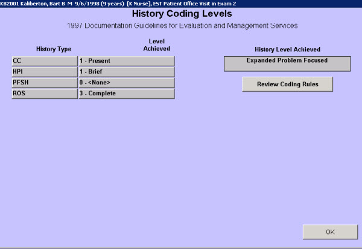
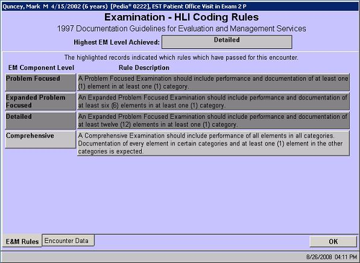
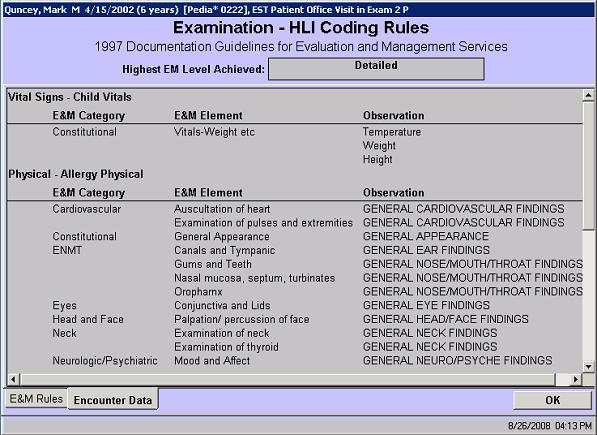

|
In this solution...
- Purpose
- Before You Begin
- Steps
- Want to Learn More?
- Related Solutions
- Related Education Opportunities
Purpose
At the end of each encounter, the encounter owner can verify that the level chosen by the system is correct based on E&M Coding laws and regulations. The verifying screen can be accessed from two places: on the patient's chart there is a small button labeled E M Coding Level with a number 1 through 5 on it; additionally on the Billing Review (Exit) screen there is a small button labeled Current Visit level with a number 1 through 5 on it.
Selecting either of these buttons takes the user to the Encounter Coding Levels screen. This screen indicates the level that was calculated and allows the user to get more details and make any necessary changes. This screen is shown below.
The asterisks illustrate the level of coding determined by encounterPRO for each category: History, Examination, and Decision Making. EncounterPRO also lists the amount of time each person in the practice spent with the patient's chart. This is important documentation in case it is necessary to 'up-code' because of counseling time, a factor that encounterPRO does not include in the level algorithm.
The calculated visit level is highlighted in dark gray. The user can override this decision by manually highlighting a number at the User Selected Visit Level and then selecting finish. Choose the Details button below any of the categories to display details on the level achieved.
The Coding Levels screen appears for the category, such as the History Coding Levels screen. E&M Coding rules for this category can be accessed from the Review Coding Rules button.
IMPORTANT: EncounterPRO calculates a suggested visit level based on the amount of information that was documented during the encounter. The system can only measure the work done, it cannot evaluate the necessity of the work. Ultimately it is the encounter owner or provider, not encounterPRO who is responsible for the E & M levels chosen. The system merely offers a suggested level based on the observations recorded, and gives the provider the option to view the reasons that this level is suggested, but it is he or she who chooses the encounter level that is approved and sent to billing.
Reviewing the History Coding
In version 5, a user can review how encounterPRO calculated the history coding level. Access the Encounter Coding Levels screen, then select Details below the History column. The History Coding Levels screen shows which level was achieved for each history type. Select any of the Level Achieved bars to view the Coding Rules screen. The first tab shows which rule was used for this encounter. The Encounter Data tab shows the exact observation and elements that were counted.

Reviewing the Examination Coding
In version 5, a user can review how encounterPRO calculated the examination coding level. Access the Encounter Coding Levels screen, then select Details below the Examination column. The Examination Coding Levels screen shows which level was achieved for each observation type. Select any of the Level Achieved bars to view the Coding Rules screen. The first tab shows which rule was used for this encounter. The Encounter Data tab shows the exact observations and elements that were counted.


Reviewing the Decision Making Coding
In version 5, a user can review how encounterPRO calculated the decision making coding level. Access the Encounter Coding Levels screen, then select Details below the Decision Making column. The Decision Making Coding Levels screen shows which level was achieved for each decision making component. Select any of the Level Achieved bars to view the Coding Rules screen. The first tab shows which rule was used for this encounter. The Encounter Data tab shows the exact observations and elements that were counted.
|